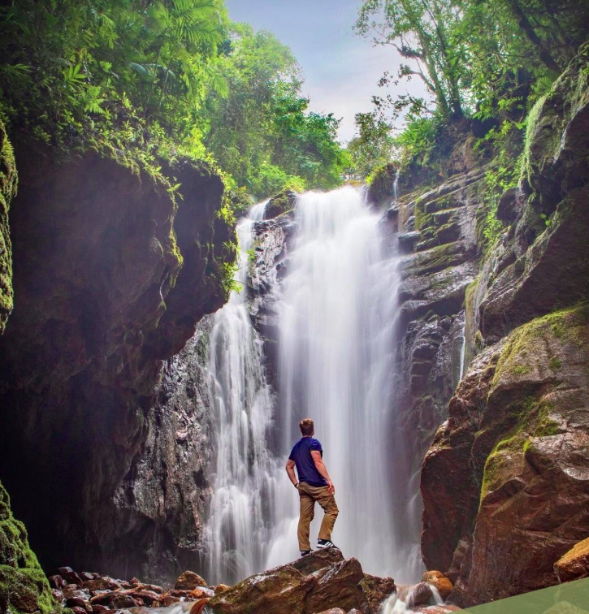

01 · ATRACTIVO NATURAL
Catarata Río Tigre
El origen del nombre «Catarata Río Tigre» se debe a los fuertes sonidos que emite el agua al chocar con las rocas, asemejándose al rugido de un tigre, especialmente durante los meses de invierno cuando el caudal aumenta. Ubicada en Oxapampa, Pasco, esta cascada forma parte de la Reserva de la Biosfera Oxapampa-Asháninka-Yánesha y es una joya natural en la selva central de Perú.
RESERVA NATURAL